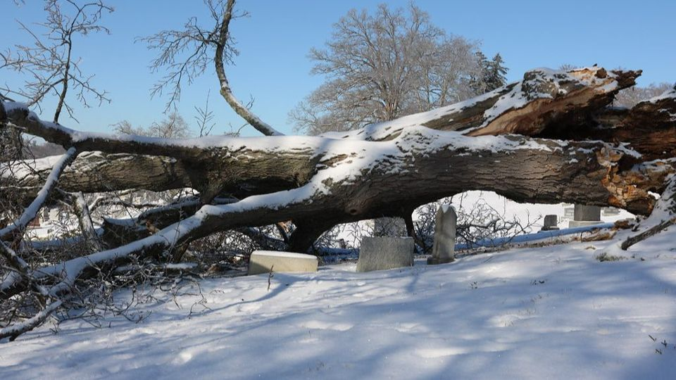

Feu de forêt : débroussaillement et réflexes pour se protéger
En zone exposée aux feux de forêt, le débroussaillement autour des habitations est une obligation légale qui ralentit la propagation des flammes. Si un incendie approche sans ordre d'évacuation, le bâtiment en dur reste votre meilleur abri. Suivez toujours les consignes des autorités et préparez votre kit d'urgence 72 h.
Informations pratiques, sources officielles (Géorisques, info.gouv.fr, ministère chargé de l'Écologie, SGDSN (Guide Tous responsables, 20/11/2025)). Elles ne remplacent pas les consignes des autorités. En cas d'urgence, appelez le 112 et suivez les consignes de la préfecture, de la radio et de FR-Alert.
L'essentiel
- Alertez les pompiers au 18 ou au 112. Le 114, par SMS, est réservé aux personnes sourdes ou malentendantes.
- Abritez-vous dans un bâtiment en dur fermé.
- Fermez portes, fenêtres et volets.
- Bouchez aérations et bas de portes avec des linges mouillés.
L'obligation légale de débroussaillement
Dans les départements exposés aux incendies de forêt et de végétation, le Code forestier impose l'obligation légale de débroussaillement (OLD) autour des constructions situées en forêt ou à moins de 200 mètres d'un bois ou d'une forêt.
- Principe : réduire la masse végétale (broussailles, branches basses, herbes sèches, feuilles sur le toit et dans les gouttières) afin de créer une discontinuité autour du bâti.
- Périmètre courant : en général sur 50 mètres autour de la construction (pouvant être porté jusqu'à 100 mètres par décision du maire ou du préfet) et sur 10 mètres de part et d'autre des voies d'accès privées, selon les règles en vigueur.
- Vérification locale : consultez Géorisques et votre mairie ou préfecture pour connaître le zonage et les modalités précises de votre commune.
Réflexes immédiats si un feu de forêt approche
En cas de départ de feu ou d'alerte locale, agissez sans panique et ne prenez pas la route sans consigne d'évacuation des autorités : une voiture n'offre pas une protection suffisante face aux flammes et aux fumées.
- Alertez et informez-vous : appelez le 18 ou le 112 (ou le 114 par SMS/visio si besoin) si le feu n'est pas encore signalé, puis suivez les consignes de la préfecture et la radio.
- Éloignez les éléments inflammables : rentrez le mobilier de jardin, les coussins, le bois ou les bouteilles de gaz éloignées et fermez les bouteilles extérieures si cela est sûr.
- Préparez l'abri : gardez votre kit d'urgence 72 h, de l'eau et des linges humides à portée de main.
S'abriter dans un bâtiment en dur
Sauf ordre d'évacuation donné par les secours ou la préfecture, réfugiez-vous dans une maison ou un bâtiment fermé et solide.
Calfeutrer le logement
- Fermez portes, fenêtres, volets et trappes de cheminée
- Colmatez les fentes sous les portes avec des linges mouillés
Limiter le risque thermique
- Arrosez les abords et la façade avant l'arrivée des fumées si l'eau est disponible
- Fermez l'arrivée de gaz si vous pouvez le faire en sécurité et ouvrez le portail pour faciliter l'accès des secours.
Se protéger des fumées
- Restez dans une pièce éloignée de la façade exposée aux flammes
- Respirez près du sol à travers un linge humide en cas de fumée
Questions fréquentes
Faut-il fuir en voiture quand un feu de forêt approche ?
Non, sauf ordre d'évacuation donné par les autorités ou les secours. Rester à l'abri dans un bâtiment en dur fermé protège mieux qu'un véhicule sur une route enfumée ou bloquée.
Qui est concerné par l'obligation légale de débroussaillement ?
Les propriétaires de constructions situées dans ou à proximité (moins de 200 mètres) des bois et forêts dans les territoires exposés définis par la réglementation et les arrêtés préfectoraux.
Comment savoir si mon logement est en zone exposée aux feux de forêt ?
Vous pouvez vérifier l'exposition de votre adresse sur georisques.gouv.fr et consulter les arrêtés municipaux ou préfectoraux en mairie.
Que faire après le passage du feu ?
Sortez uniquement lorsque les autorités l'autorisent, surveillez d'éventuelles reprises de feu, évitez de marcher dans les cendres chaudes et signalez tout danger aux secours.
À lire aussi

 Kit de survie 72 h : la listeListe complète du kit d’urgence 72h du gouvernement : eau, nourriture, radio, trousse… Version claire + checklist interactive gratuite adaptée à votre foyer.
Kit de survie 72 h : la listeListe complète du kit d’urgence 72h du gouvernement : eau, nourriture, radio, trousse… Version claire + checklist interactive gratuite adaptée à votre foyer.
